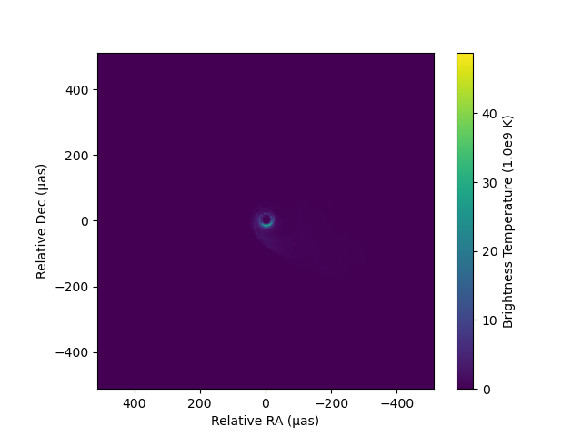
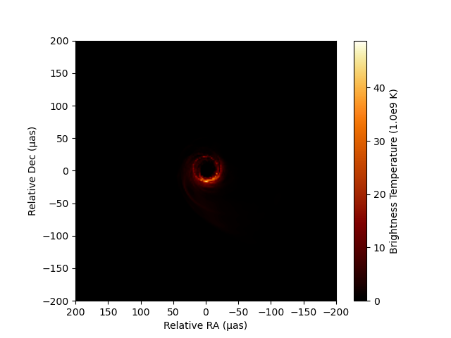
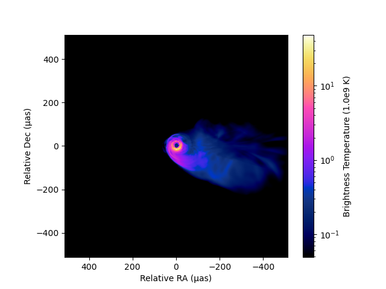
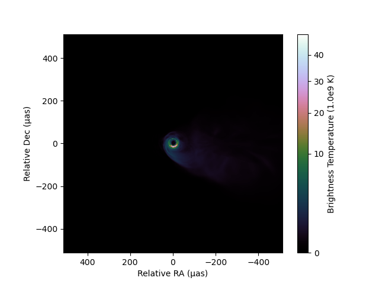

In-memory Intensity Images
IntensityImage provides an in-memory implementation of the 5D intensity image. Internally, it uses a self-descriptive data set using the DimStack type of EHTDimensionalData.jl, which is an extension of the powerful DimensionalData.jl. Unless you are dealing with a huge size of images that will not fit within the memory of your computer, this will likely be the data type you will work with using this package.
Loading an Image FITS file
Here, we will use a FITS image created by Python's eht-imaging library, which was used in Chael et al. 2023. Let's download the data first.
using Downloads: download
# Download a FITS image
fitsname = download("https://github.com/achael/multifrequency_scripts/raw/main/sec_4.2/images_M87_Chael/M87_230GHz_Chael.fits")"/tmp/jl_WTANOd6pSv"A FITS file can be loaded into an IntensityImage instance using the load_fits method. This method utilizes FITSIO.jl, and you can also directly load data from an instance of the FITS data type in FITSIO.jl.
using EHTImages
# Load the FITS image into an IntensityImage instance
image = load_fits(fitsname)DimStack with dimensions:
Dim{:x} Sampled{Int64} 1:512 ForwardOrdered Regular Points,
Dim{:y} Sampled{Int64} 1:512 ForwardOrdered Regular Points,
Dim{:p} Sampled{Int64} 1:1 ForwardOrdered Regular Points,
Dim{:f} Sampled{Int64} 1:1 ForwardOrdered Regular Points,
Dim{:t} Sampled{Int64} 1:1 ForwardOrdered Regular Points
and 4 layers:
:intensity Float64 dims: Dim{:x}, Dim{:y}, Dim{:p}, Dim{:f}, Dim{:t} (512×512×1×1×1)
:polarization String dims: Dim{:p} (1)
:frequency Float64 dims: Dim{:f} (1)
:time Float64 dims: Dim{:t} (1)
with metadata OrderedCollections.OrderedDict{Symbol, Any} with 25 entries:
:format => "EHTJulia Intensity Image NetCDF4 Format"
:version => v"0.1.0"
:source => "M87"
:instrument => "VLBI"
:observer => "Nameless Observer"
:coordsys => "icrs"
:equinox => -1
:nx => 512
:dx => 9.69613e-12
:xref => 3.27609
:ixref => 256.5
:xunit => "rad"
:ny => 512
:dy => 9.69613e-12
:yref => 0.216266
:iyref => 256.5
:yunit => "rad"
:np => 1
:polrep => "stokes"
⋮ => ⋮All of the loaded intensity images, including their metadata, are loaded into the field image.dimstack::EHTDimensionalData.DimStack.
image.dimstack # will give an access to the dimstack instance storing all image data.IntensityImage is immutable, so users cannot change the DimStack object associated with an IntensityImage instance to something else. However, arrays and metadata stored in the DimStack object are mutable. This allows users to flexibly edit data inside.
Accessing to and editing data
You can access to the raw array of the intensity image in dimension of (x, y, polarization, fequency, time) by
image.data # return an array of intensity in the unit of Jy/pixel512×512×1×1×1 Array{Float64, 5}:
[:, :, 1, 1, 1] =
1.49088e-20 1.91487e-20 2.43507e-20 … 8.52323e-17 7.10324e-17
1.34429e-20 1.72043e-20 2.19191e-20 8.57605e-17 7.12822e-17
1.20246e-20 1.54021e-20 1.97089e-20 8.5778e-17 7.14971e-17
1.0701e-20 1.37861e-20 1.75985e-20 8.56193e-17 7.13338e-17
9.51977e-21 1.22547e-20 1.57236e-20 8.50098e-17 7.09268e-17
8.42439e-21 1.08803e-20 1.39877e-20 … 8.41273e-17 7.02246e-17
7.43966e-21 9.63265e-21 1.23898e-20 8.31614e-17 6.91728e-17
6.54987e-21 8.49386e-21 1.09644e-20 8.1161e-17 6.8036e-17
5.74401e-21 7.48689e-21 9.66075e-21 7.91269e-17 6.62064e-17
5.03973e-21 6.5659e-21 8.51665e-21 7.62283e-17 6.43447e-17
⋮ ⋱ ⋮
4.22026e-8 4.41303e-8 4.60761e-8 3.64781e-10 3.51191e-10
4.30982e-8 4.50123e-8 4.69385e-8 3.58739e-10 3.46048e-10
4.39581e-8 4.58619e-8 4.7768e-8 … 3.51929e-10 3.39918e-10
4.47899e-8 4.6666e-8 4.85571e-8 3.441e-10 3.333e-10
4.55679e-8 4.74378e-8 4.92987e-8 3.35825e-10 3.25714e-10
4.63103e-8 4.81514e-8 4.99992e-8 3.2667e-10 3.17749e-10
4.69845e-8 4.88218e-8 5.06397e-8 3.17083e-10 3.09111e-10
4.76138e-8 4.94163e-8 5.12252e-8 … 3.0704e-10 2.99919e-10
4.81937e-8 4.99617e-8 5.17323e-8 2.9642e-10 2.9025e-10You can access to the label or coordinates of each axis by
image.p # return an array of polarization labels in string1-element Vector{String}:
"I"image.t # return an array of time in MJD1-element Vector{Float64}:
62750.68305555556image.f # return an array of frequencies in Hz1-element Vector{Float64}:
2.3e11Now you can see that this particular image is a single-frequency, single-stokes, and single-epoch image with 512 x 512 pixels. For the spatial extent, there is a dedicated method get_xygrid(::AbstractIntensityImage). By default, it returns a series of central coordinates in radians.
xygrid = get_xygrid(image)(2.4773618721862773e-9:-9.696132572157641e-12:-2.4773618721862773e-9, -2.477361872186318e-9:9.6961325721578e-12:2.477361872186318e-9)or you can specify a unit in mutliple ways.
# use string
xygrid = get_xygrid(image, "μas")
# use Unitful
using Unitful
using UnitfulAngles
xygrid = get_xygrid(image, u"μas")
# use preload units in EHTUtils
using EHTUtils # preload units
xygrid = get_xygrid(image, μas)(510.99256657044646:-1.9999709063422562:-510.99256657044646, -510.9925665704548:1.9999709063422888:510.9925665704548)Now you see that this image has a field of view of about 1022 μas in each axes. If you need to sample a vector from each you can simply use collect(xygrid[1]).
Metadata are stored in OrderedDict. You can access to metadata from the metadata field.
image.metadata # access to metadataOrderedCollections.OrderedDict{Symbol, Any} with 25 entries:
:format => "EHTJulia Intensity Image NetCDF4 Format"
:version => v"0.1.0"
:source => "M87"
:instrument => "VLBI"
:observer => "Nameless Observer"
:coordsys => "icrs"
:equinox => -1
:nx => 512
:dx => 9.69613e-12
:xref => 3.27609
:ixref => 256.5
:xunit => "rad"
:ny => 512
:dy => 9.69613e-12
:yref => 0.216266
:iyref => 256.5
:yunit => "rad"
:np => 1
:polrep => "stokes"
⋮ => ⋮As noted eariler, arrays and metadata stored in IntensityImage instances are mutable. This allows users to flexibly edit data inside.
image.metadata[:observer] = "Wonderful Astronomer" # edit metadata
image.metadataOrderedCollections.OrderedDict{Symbol, Any} with 25 entries:
:format => "EHTJulia Intensity Image NetCDF4 Format"
:version => v"0.1.0"
:source => "M87"
:instrument => "VLBI"
:observer => "Wonderful Astronomer"
:coordsys => "icrs"
:equinox => -1
:nx => 512
:dx => 9.69613e-12
:xref => 3.27609
:ixref => 256.5
:xunit => "rad"
:ny => 512
:dy => 9.69613e-12
:yref => 0.216266
:iyref => 256.5
:yunit => "rad"
:np => 1
:polrep => "stokes"
⋮ => ⋮Plotting Images
Intensity map
The package currently relies on PythonPlot.jl for image visualization. It has a customized imshow method for AbstractIntensityImage type.
using EHTUtils # for shortcuts to flux and angular units
using PythonPlot
f = figure()
ax = gca()
imshow(image, fluxunit=1e9K, angunit=μas, scale=:linear, cmap="viridis")Dict{Any, Any} with 4 entries:
"ylabelobj" => <py Text(0, 0.5, 'Relative Dec (μas)')>
"xlabelobj" => <py Text(0.5, 0, 'Relative RA (μas)')>
"colorbarobj" => <py matplotlib.colorbar.Colorbar object at 0x1803c3090>
"imshowobj" => <py matplotlib.image.AxesImage object at 0x180c20f10>
As you can see imshow will return all python objects in the generated plot so that users can further customize each component.
You can utilize a custom set of perceptually uniform colormaps implemented in the Python library ehtplot, which has been utilized in publications by the EHT Collaboration. After installing ehtplot via CondaPkg.jl (see the Installation section of the documentation), you can import and utilize it for image visualization using PythonCall.jl. For example:
using PythonCall # provides the `pyimport` function
ehtplot = pyimport("ehtplot")
f = figure()
ax = gca()
# use "afmhot_us" colormap in ehtplot, a standard colormap used in the EHT Collaboration
imshow(image, fluxunit=1e9K, angunit=μas, scale=:linear, cmap="afmhot_us")
xlim(200, -200)
ylim(-200, 200)
You can also change a scale. imshow method has three options (:linear, :log, and :gamma). The dynamic range of :log scale contour can be controlled by dyrange.
f = figure()
ax = gca()
imshow(image, fluxunit=1e9K, angunit=μas, scale=:log, dyrange=1000, cmap="gnuplot2_us")
For gamma scale, the power low can be controled by gamma:
f = figure()
ax = gca()
imshow(image, fluxunit=1e9K, angunit=μas, scale=:gamma, gamma=0.5, cmap="cubehelix_u")
Toolkit for a custom plot of images
Sometimes, users might want to create a custom function to plot images. There are some useful sets of methods to assist with this. Additionally, the source code for the imshow method would be helpful for learning how to use PythonPlot for custom plotting.
get_imextentmethod: This method will return the extent of the image in the specified angular unit for thePythonPlot.imshow'sextentargument. Users can plot images with the actual angular scales usingPythonPlot.imshow(array, origin="lower", extent=imextent).get_bconvmethod: This method derives a conversion factor from Jy/Pixel (the unit for thedatafield) to an arbitrary unit of intensity.
Saving into a FITS file
You can save a 3D cube of a sliced image using the save_fits!(::AbstractIntensityImage, filename::AbstractString, idx=(1,1)) method. The idx parameter here represents the (time, frequency) indices, as popular image FITS formats do not support non-equidistant grids for time and frequency. The exported FITS file is compatible with CASA, AIPS, DIFMAP, and other EHT imaging packages (eht-imaging and SMILI).
save_fits!(image, './foobar.fits')Create a brank new image
You can create a blank 5D image directy with the intensityimage function.
im = intensityimage(200, 1.0, μas)You can specify also time, frequency, number of polarizations and all other metadata as well. Please see the docstring of intensityimage here.